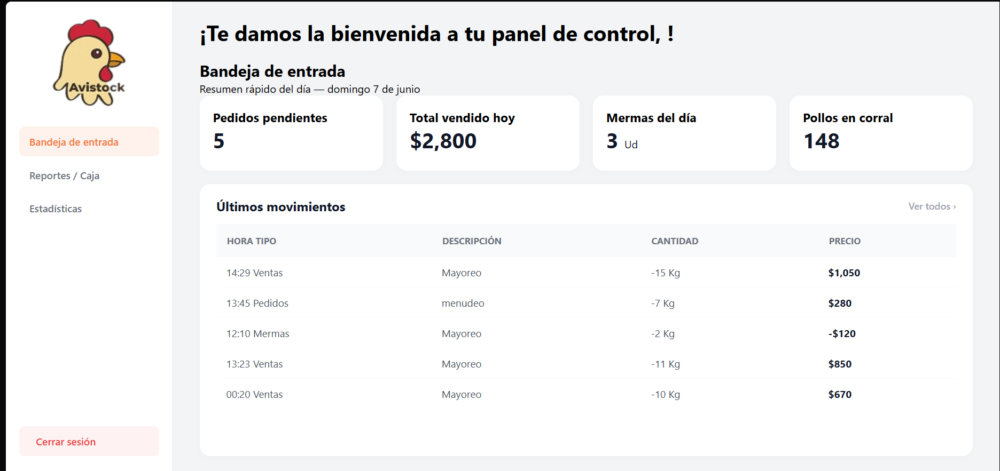
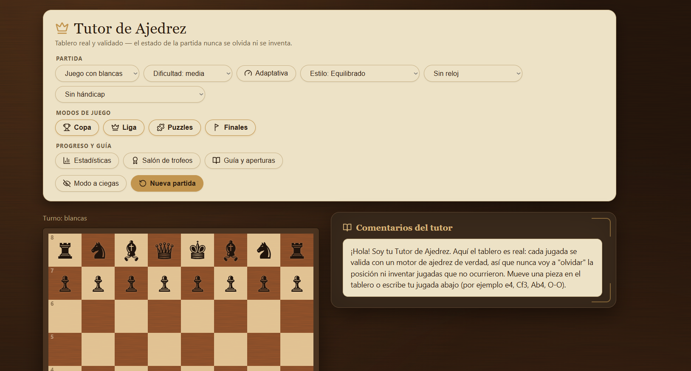
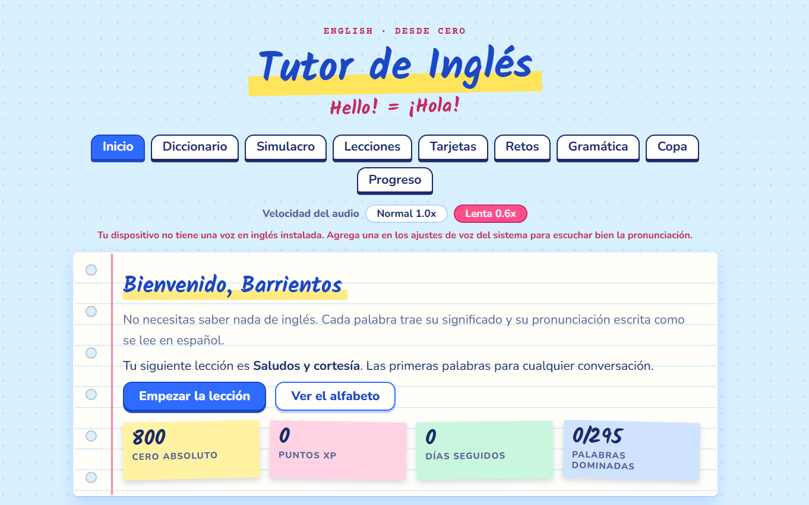

Bienvenido a mi espacio creativo
Aquí comparto mis proyectos, experimentos y reflexiones sobre desarrollo y diseño.
Ver mi trabajoMis Proyectos

Avistock
Sistema de gestión avícola desarrollado como proyecto integrador en 3er cuatrimestre (Ingeniería de en Tecnologías de la Información e Innovación Digital). Permite el control de inventario, ventas, mermas y pedidos en tiempo real.

Tutor de Ajedrez
Proyecto personal de un tutor básico de ajedrez offline. Valida movimientos en un tablero real, no olvida el estado de la partida y cuenta con diferentes modos de juego y dificultad adaptativa.

Tutor de Inglés
Proyecto personal diseñado para aprender inglés desde cero. Cuenta con diccionario, lecciones, simulacros, tarjetas de estudio y control de velocidad de audio para practicar la pronunciación.
Mis Ideas
De Web a Aplicación de Android
El siguiente gran paso para mis tutores de ajedrez e inglés es evolucionarlos de páginas web locales a aplicaciones móviles completas, explorando herramientas como PWA y Capacitor.
Mis herramientas favoritas del año
Una recopilación de las extensiones, editores de código y recursos de diseño que más he utilizado recientemente.